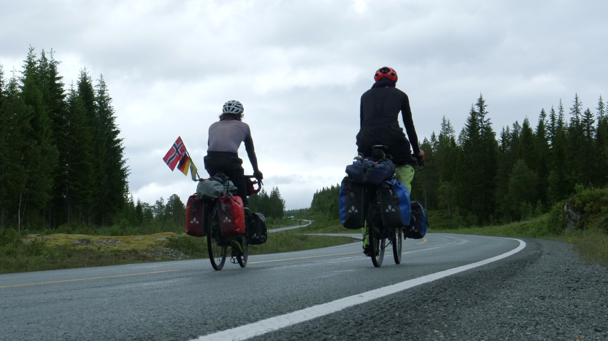

À propos
Qui sommes-nous et quelle est notre vision de la mobilité?
Qui sommes-nous ?
Nous sommes Hector et Aloïs. Notre histoire d'amitié a commencé dans l'Est de la France, à Nancy, lors de nos études en classe préparatoire de 2016 à 2018. Devenus ingénieurs, nos routes ne s'écartent jamais trop longtemps, réunis par notre passion du vélo et notre goût de la simplicité. Donnant de notre temps dans des ateliers associatifs d'auto-réparation de vélos, nous avons à cœur de transmettre ces valeurs et d'essayer de rendre notre monde plus cyclable!
Nos envies d'aventure nous mènent à nous embarquer dans plusieurs virées à vélo, plus ou moins longues, en France ou dans les pays voisins d'Europe, soudant notre amitié. Dans ce mode de voyage, nous découvrons un formidable moyen de s'évader, de prendre le temps, de se sentir libre, et de vivre pleinement au gré des rencontres inopinées. À l'automne 2024, le projet d'aller au Cap Nord prend forme, et dans nos appartements de Lorient et de Nantes, le rêve de rejoindre, à vélo, les terres les plus septentrionales d'Europe continentale devient doucement une réalité.


Aloïs vu par Hector
"Mettez Aloïs sur un vélo, et il sera heureux. Avec lui, pas besoin de s'embarrasser du superflu : Il aspire au retour à l’essentiel, au plaisir simple des couchers de soleil et des siestes dans les salles d’attente de ferry. Vous voulez lui proposer une nuit dans un airbnb ou un camping? Bonne chance. Pourquoi se compliquer la vie quand la nature vous offre un carré d’herbe au bord d’une rivière? Son secret : jamais de baisse de moral tant que le voyage n’est pas fini. La pluie aurait sûrement eu raison de moi s’il n’avait pas eu les mots justes pour me remotiver! Son point faible : Il n’aime pas les contraintes matérielles et le matériel ne l’aime pas. Une des seules choses sur terre pouvant l’énerver est le matériel trop peu durable, qui lui casse trop souvent entre les doigts."

Hector vu par Aloïs
"Hector, c’est la définition même de l’endurance sur un vélo, à condition qu’il soit nourri régulièrement et en quantité démentielle. Il a toujours peur de manquer de nourriture lorsque nous faisons les courses… A l’inverse, sa raison a pu parfois modérer mon enthousiasme parfois démesuré sur un vélo. Son expérience de cinéaste amateur nous a entraîné dans une aventure cinématographique avec la réalisation d’un documentaire, entraînant son lot de rencontres et de connaissances sur la mobilité cyclable en Europe du Nord. Son secret : le chef Hector nous a apporté des idées repas très variées alors que j’aurais pu traverser l’Europe en mangeant uniquement des pâtes pesto. Son point faible : il est incapable de stocker du gras et a donc très vite froid, ce qui est très peu pratique et peu facile à gérer en Norvège. "
Notre vision de la mobilité
Vers une transition cyclable.
Dans un monde aux ressources limitées, et bouleversé par la crise écologique en cours, ce documentaire invite à questionner notre rapport au temps, à l'énergie, à la technologie. Il veut également montrer qu'en voyage, le dépaysement peut être trouvé sans avoir besoin de recourir à l'avion ou à la voiture.
Le vélo dispose d'avantages sur de nombreux plans : économiquement accessibles, facilement réparables, silencieux, durables dans le temps, luttant contre la sédentarité, invitant à ralentir le rythme. Le choix de passer par des pays ambitieux en termes d'aménagements cyclables, comme l'Allemagne et le Danemark, permet d'illustrer ces propos et de montrer des exemples inspirants chez nos voisins européens.


Les limites du modèle "tout voiture"
Pour beaucoup, la voiture véhicule un imaginaire de liberté. Pouvoir aller où l'on veut, quand on veut. Mais est-ce une réalité? Entre les problèmes de congestion, de sédentarité, son coût environnemental et économique (300 milliards d'euros par an pour la société en France, source : étude du Forum Vies Mobiles), les limites du modèle "tout voiture" sont apparentes.
Cette pseudo liberté peut en fait cacher une dépendance : l'aménagement de nos territoires, largement façonnés par les lobbies automobiles, nous rend prisonniers de ce véhicule, souvent sans autre alternative possible, et exclut celles et ceux qui n'ont pas les moyens financiers d'y accéder. Les problèmes liés au système voiture sont tellement multifactoriels qu'on peut questionner le fait de les résoudre en changeant simplement de motorisation.
Un imaginaire différent pourrait exister, dans lequel la liberté serait représentée par le vélo. Car de toutes nos rencontres, une chose ressort systématiquement lorsqu'on leur demande ce que représente le vélo pour eux: cette liberté, souvent découverte pendant l'enfance, de pouvoir se déplacer librement, sans limite, quand et où ils veulent, à l'air libre.
Ressources
Découvrez ci-dessous des associations, organismes, et acteurs qui plaident pour changer nos modes de mobilité et mettre en avant le vélo.
FUB - Fédération française des Usagères et Usagers de la Bicyclette
Plateforme majeure pour les droits des cyclistes en France.
Réseau Vélo et Marche
Collectivités engagées pour les mobilités actives.
Les boites à vélo
L'union des professionnel.le.s à vélo.
Thèse d'Aurélien Bigo
Recherche académique sur la transition dans les modes de mobilités.
Vélo-Reporter Jérôme Zindy
Réalisateur en quête de solutions sociétales et environnementales vertueuses.
Podcasts France Culture - La Vélo-Révolution
Série documentaire audio sur l’histoire du vélo de 1817 à nos jours.
Extrême Défi - ADEME
Expérimentation autour des véhicules intermédiaires.
AAVP - Association des acteurs du vélo public
Vélos en libre-service et transports partagés.
AF3V - Association Française des Véloroutes et Voies Vertes
Réseau de voies cyclables en France.
France Vélo Tourisme
Conseil sur les voyages à vélo et voies vertes.
Réseau "l'Heureux Cyclage"
Le réseau des ateliers de réparation participatifs et solidaires.